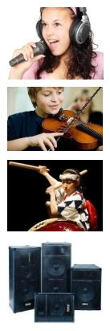
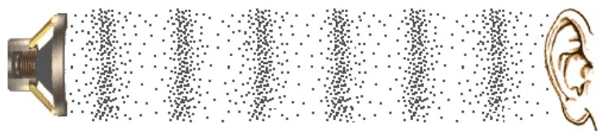
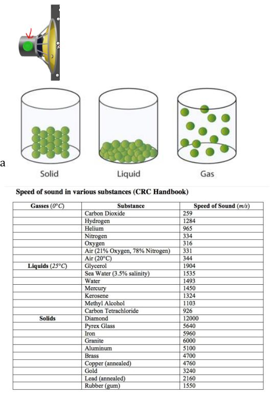
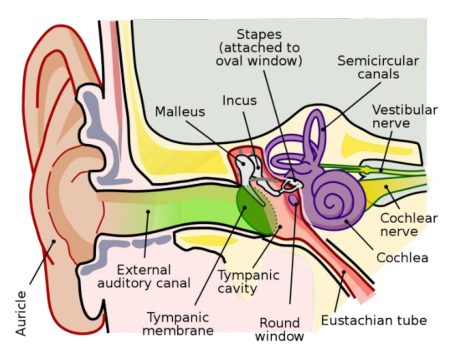
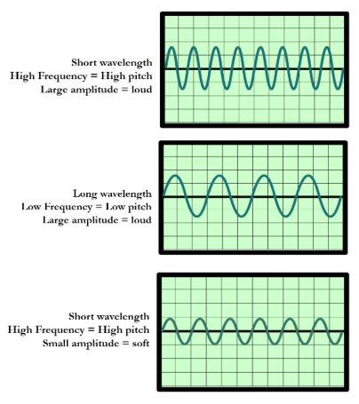
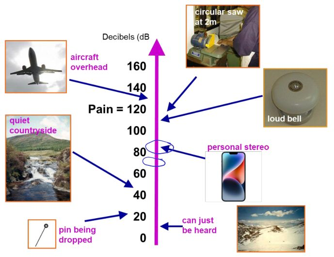
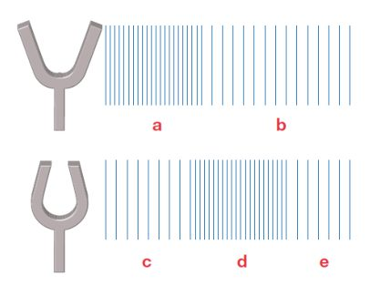

1.2 Sound waves
Sound is caused by vibrations that travel as a sound wave. Sound travels as a longitudinal wave. There are many ways to make the vibrations:
- your voice box (larynx), which contains the vocal cords. These vibrations make the air in your throat and mouth vibrate
- a bow running across a stringed instrument
- a drum vibrating after it is struck
- a speaker being pushed forwards and backwards by an electrical signal
- your eardrum vibrating as the air next to it vibrates.


The speaker vibrates back and forth, bumping into the air molecules next to it, which bump into the next molecules, and so on, until the vibration reaches the ear.
The speed of sound
- The speed of sound depends on the medium. In air it is approximately 340 m/s.
- Sound needs a substance to travel through, and it travels by particles vibrating. It cannot travel through a vacuum.
- Particles in a solid are closer together than in a liquid or gas, so vibrations pass more easily from particle to particle. Sound travels fastest through solids.
- Sound travels faster in less dense gases (e.g. helium) than in denser gases (e.g. sulfur hexafluoride).

Hearing sounds
- Sound waves travel from the outer ear through the auditory canal, making the eardrum (tympanic membrane) vibrate.
- This makes the three small bones of the middle ear, the ossicles (hammer, anvil and stirrup), move.
- The vibrations pass through the oval window into the fluid in the cochlea of the inner ear, stimulating thousands of tiny hair cells.
- The vibrations are turned into electrical impulses, which the brain perceives as sound.

For sound waves, frequency is perceived as pitch and amplitude as loudness.
- High frequency means short wavelengths (high pitch); low frequency means long wavelengths (low pitch).
- The human ear hears vibrations from 20 Hz to 20 000 Hz, although sensitivity to high frequencies falls with age (or overuse of loud headphones).

Loudness
The loudness of sound is measured in decibels (dB). The threshold of human hearing is about 0 dB, and pain or ear damage begins around 120 dB.
The decibel scale is not linear: each +10 dB is a ×10 increase in sound intensity.

Section 1.2: Key summary questions
State the frequency range of hearing for the average human: Hz to Hz
Which of the following sound intensity levels would be suitable for listening to music on headphones?
An increase of +10 dB is equivalent to how much of an increase in sound intensity?
In which of the following does sound travel fastest?
Identify the compressions and rarefactions in the sound waves made by the tuning forks.

Compressions are where the lines are bunched closely together; rarefactions are where they are spread apart.
Atahan strikes a 440 Hz tuning fork and listens to the sound. Hema strikes another tuning fork and hears a lower-pitched sound. Assuming the speed of sound in air is constant, describe the difference between the wavelengths of the two sounds.
A lower pitch means a lower frequency. Since v = f × λ and the speed of sound is constant, a lower frequency gives a longer wavelength. So Hema's sound has a longer wavelength than Atahan's.